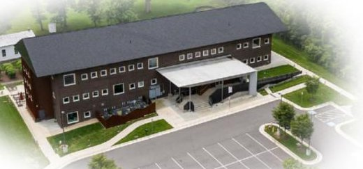
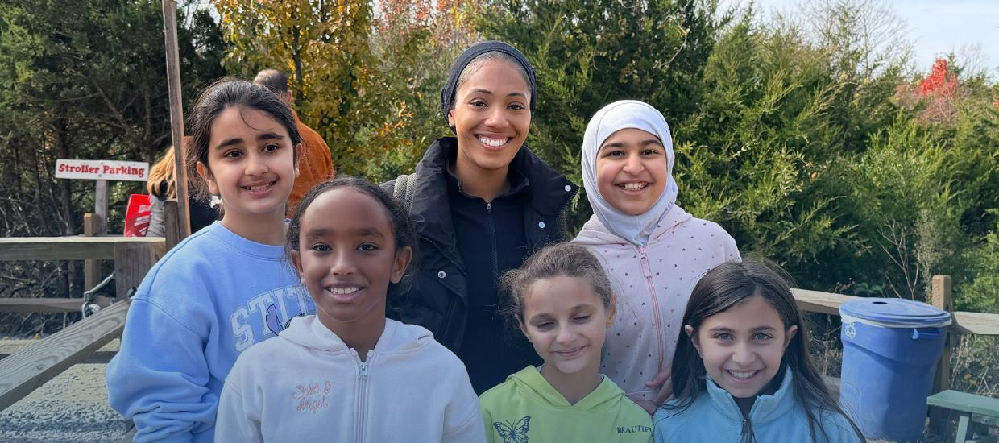
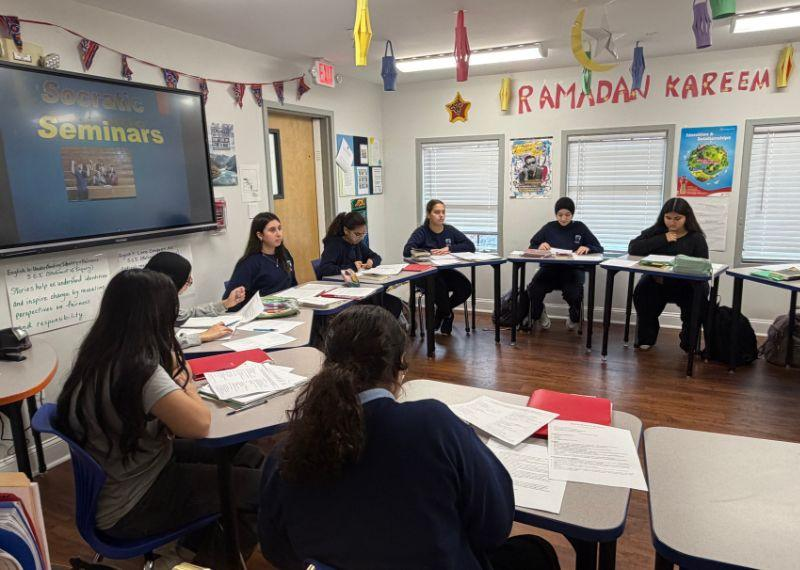
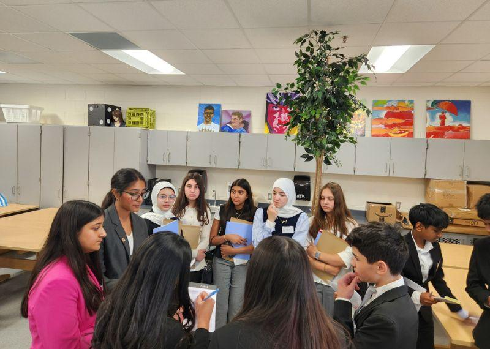
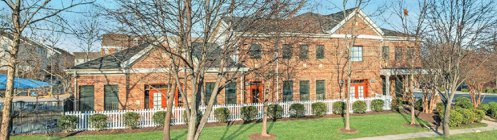
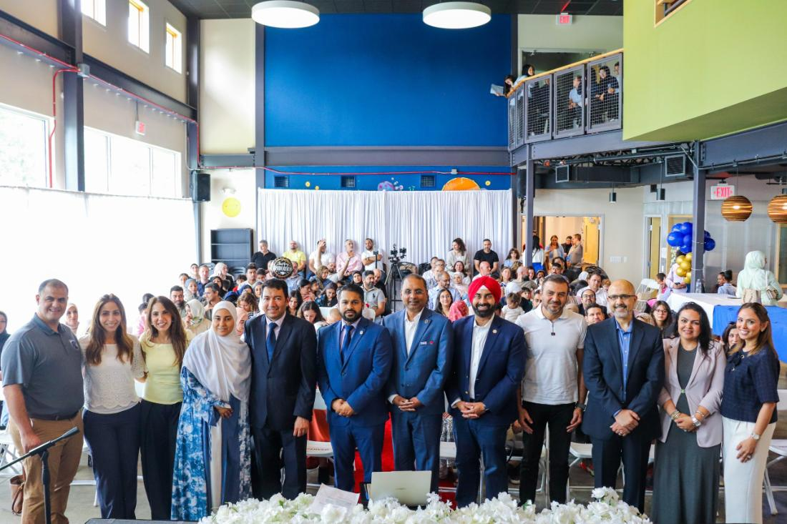
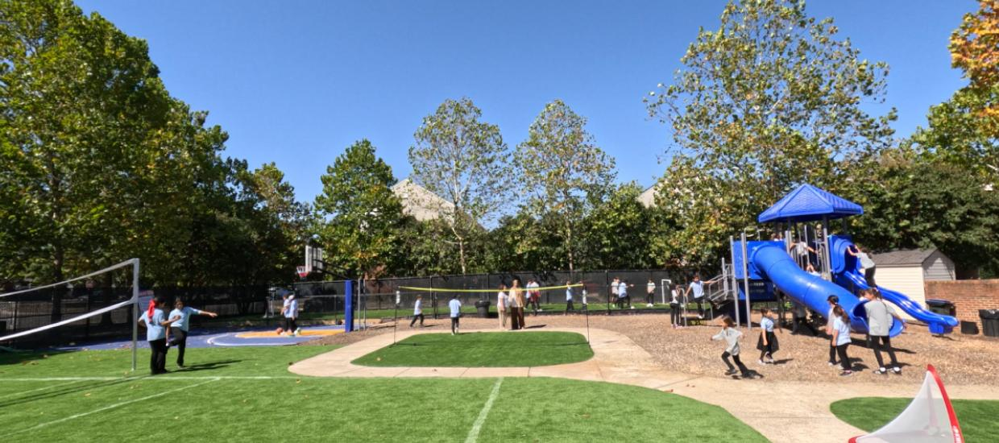

K–12 · Ashburn & Chantilly campuses
Northern Virginia’s Only Islamic School Uniting IB Inquiry, AP Rigor, and an Associate Degree in High School
- IB Candidate School*PYP & MYP Inquiry Frameworks
- Associate Degree4 NOVA A.S. Tracks (Eng, IT, Med, Bus)
- AP Courses17 AP & 22 Honors Courses (Level I & II)
- Dual EnrollmentUp to 60 College Credits from Grade 9
10:1Student-to-teacher ratioPersonalized attention in every grade
100%IB-trained faculty55%+ hold Master’s or higher
39+AP & Honors courses17 College Board AP, 22 Honors
60College credits in HSUp to 60 · 4 NOVA Associate tracks
Explore Our Programs
Three stages, one path from KG to Grade 12, across our Ashburn and Chantilly campuses.
 KG – G5
KG – G5Primary Years
Small classes, strong reading, daily Quran.
Explore ›
G6 – G8Middle Years
Eight IB subjects and real-world projects.
Explore ›
G9 – G12High School
17 AP courses and up to 60 college credits.
Explore ›Recognized Standards, College-Level Options
IB Candidate School, College Board AP, and college credit with NOVA.
IB Candidacy and Accreditation
On the Path to Becoming an IB World School
Falcon Academy is a Candidate School* for the Primary Years Programme and the Middle Years Programme. This school is pursuing authorization as an IB World School. These are schools that share a common philosophy—a commitment to high quality, challenging, international education that Falcon Academy believes is important for our students.
Falcon Academy is also a Candidate for Accreditation with NCA CASI, NWAC and SACS CASI.
Accreditation DetailsCollege Board Approved AP Courses
17 College Board AP courses and 22 Honors courses, approved at Level I and II. Each AP course ends with the AP exam in May. Explore AP Courses Associate degree pathwayCollege Credit from Grade 9
Four NOVA Associate of Science tracks (Engineering, IT, Medical, Business), with up to 60 college credits. Explore the Pathway*Only schools authorized by the IB Organization can offer its programmes. Candidate status gives no guarantee that authorization will be granted. The associate degree is an optional goal and is not guaranteed.
Our Campuses
Grades are split by campus.

Free shuttle between campuses for:
- Brothers and sisters at different campuses
- Students who live near the other campus
Why Families Choose Falcon
A choice that nurtures potential, builds character and prepares learners for a meaningful future.

01Strong Community & Values-Based Education
Rooted in Islamic principles and heritage, we cultivate integrity, compassion and excellence. When King Abdullah Academy closed, its parents and alumni built Falcon to keep a 40-year community together, preserve its culture and spirit, and raise the academic bar for the next generation.
10:1Students for every teacher
Personalized & Holistic Learning
Learning is tailored to each child’s readiness, interests and learning style, supporting academic, emotional, physical and social growth. Teachers notice early when a child needs help or a new challenge, and every teacher who joined in our first year is a co-owner of the school.
International Standards, Islamic Heart
The IB framework is one of the most rigorous curricula in the world. As an IB Candidate School* for the PYP and MYP, Falcon delivers it in a values-driven school where prayer, Quran and Islamic values shape the day, building compassion, justice and strong character.
 04
04
Learning That Goes Beyond the Classroom
Hands-on projects, real challenges and teamwork build 21st-century skills: communication, collaboration, critical thinking and leadership. Character matters here, not just results.
Learn, Play and Grow
Our after-school program is where passions are discovered and talents are built: a structured space to explore, create and thrive long after the last bell rings.
Weekday ClubsWeekend Clubs
5-Year PlanBuilt for the long term
A Sustainable Future of Excellence
Founded on financial strength and led by seasoned entrepreneurs, Falcon follows a five-year plan focused on academic excellence, preparing learners for advanced studies and principled leadership.

07A Safe, Modern Campus
Learner-centered spaces designed for collaboration, with a large outdoor playground and a basketball court. A safe, accessible and nurturing environment:
Locked DoorsFenced Play AreaOn-Site Security
News & Events
Calendar ›- OCT2
Ashburn Students Take On the KidWind Challenge
- SEP6
Welcome Our 10 New Team Members For 2026–27
- JUL20
Falcon Achieves College Board Level I & II Approval
In Their Own Words
I had doubts, but it’s so much better than I expected. The classrooms are actually big.
Falcon parent · Nov 4, 2025